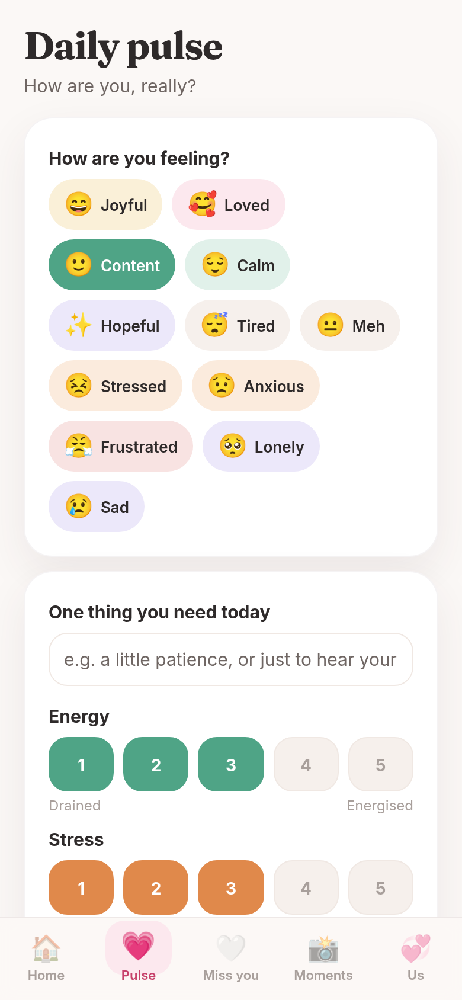
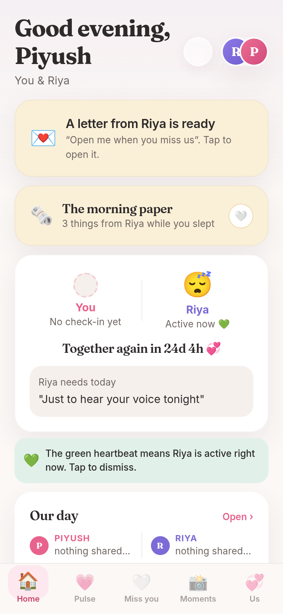

The daily pulse
One honest check-in a day: a feeling, a need, energy and stress. It becomes conversation starters, and an early warning when one of you has been struggling for days.

Now live on Android, iPhone, and the web
We built Tether to feel each other’s days while living apart. Now it’s ready for the two of you.

We are two MBA students in different cities, a night train apart. Like every long-distance couple, we had the video calls, the chats, the good-morning texts. And like every long-distance couple, we knew that none of it answers the real question: how are you, really, right now?
So we built our own answer. Tether is one shared, private space for exactly two people. It carries a daily pulse of how each of us is feeling, a hug that buzzes in a pocket hundreds of kilometres away, a compass needle that points at the other person, and an alarm that sounds one phone the instant the other needs help. No feeds. No followers. No one else.
For a long time it was ours alone, opened many times a day, usually for under a minute. It works. And every time we described it to another couple living apart, we heard the same thing: we want this too. So we opened the door.
Piyush & Riya
Everything below syncs live between exactly two phones. These are real screens from the app we use every day.
One honest check-in a day: a feeling, a need, energy and stress. It becomes conversation starters, and an early warning when one of you has been struggling for days.

A one-tap first-aid kit for the hard minutes: send a hug that buzzes their phone, a kiss, a reason you’re loved. And an emergency alert that sounds their phone loudly the moment you truly need them.
Rest your thumbs on the same spot of two screens and feel each other’s recorded heartbeat. The closest thing to holding hands we have found.
A needle that always points at your person, across any distance.
Each of you shares your day’s shape. Tether finds the window when you are both free and lets one of you propose a moment together the other accepts. No more “when are you free?” texts.
A photo a day, delayed love letters, a memory vault, a reunion countdown, shared games, and a monthly scrapbook page written from your own check-ins.
Tether is not a social network. It is the opposite: one private space, two people, and design that serves the relationship instead of showing off.
Tether stayed private for a long time, and that was deliberate: it let us build something true before building something big.
Tether ran every day on two phones. Every feature was battle-tested on a real long-distance relationship before anyone else ever saw it.
A small private beta with couples we knew who lived apart. Real feedback, honest conversations, and hardening for many spaces instead of one.
Invitations went out in waves, in the order people joined. The first couples shaped the app you are looking at now.
Tether is out in the world for every couple who lives apart, with the same promise it was born with: exactly two people, and nothing between them.
We are still two MBA students shipping between lectures. Tether will grow, but it will stay what it is: small, personal, and honest.
Tether’s founders are also its first two users, which keeps us honest: every rough edge is one we feel ourselves the same evening.
Co-founder · MBA, JBIMS Mumbai
Studies at Jamnalal Bajaj Institute of Management Studies and builds Tether between lectures and late nights. Believes software for two people should feel tender, never clinical.
Co-founder · MBA, IIM Indore
Studies at the Indian Institute of Management Indore and shapes every feature before it ships, from the daily pulse to the games. Keeper of Tether’s voice, and of its promise to stay quiet.
“We are doing our MBAs in different cities. Tether is how we stay close. Now it is yours too.”
Five minutes, two phones, one private code. That is all pairing takes.
Android, iPhone, or straight in the browser. One of you installs first and invites the other.
Your pairing code is the only key to your space. Share it with your person and no one else.
Send the first hug, set your reunion countdown, and let the daily pulse do the rest.
Or open Tether in your browser, it works on any phone or laptop, no install needed.
Install Tether on both phones, or open it in the browser. On the first screen, one of you starts your space and gets a private code; the other joins with that same code. From that moment everything syncs live between you two.
Yes. Your space belongs to you two alone and is reachable only through your shared pairing code. There are no public profiles, no feeds, and nothing anyone else can browse. We do not sell data, and we never will.
Android and iPhone, and it runs fully in the browser on any phone or laptop, all from one codebase with the same features everywhere.
Tether is free to start. If we ever charge for anything, it will be fair, clearly explained, and easy to say no to. Staying close should never feel like a subscription trap.
Of course. Tether is built around distance, but a daily pulse, love letters, and a shared vault of memories are good for any two people who are sometimes apart, even just across a city.